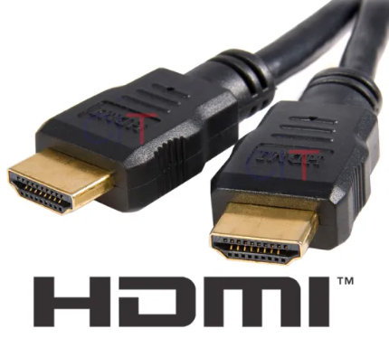
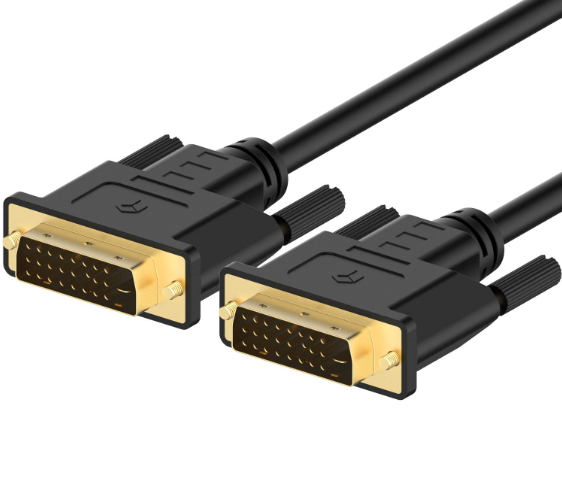
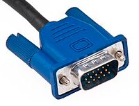

El término "puerto HDMI", se refiere a una interfaz de conexión estándar para transmitir audio y video de alta definición entre dispositivos electrónicos. HDMI significa High-Definition Multimedia Interface (Interfaz Multimedia de Alta Definición). Aquí hay una definición más detallada: Definición de Puerto HDMI: HDMI (High-Definition Multimedia Interface)** es una tecnología de conexión que permite la transmisión de señales de audio y video digital de alta calidad a través de un solo cable. Este estándar es ampliamente utilizado en una variedad de dispositivos electrónicos, como televisores, monitores, proyectores, computadoras, consolas de videojuegos y reproductores de Blu-ray. Características Principales 1. Transmisión de Alta Definición: HDMI soporta resoluciones de alta definición, incluyendo 720p, 1080p y 4K, lo que permite una excelente calidad de imagen y video. 2. Audio Digital: Además de video, HDMI transmite señales de audio digital multicanal, lo que facilita la conexión de sistemas de sonido envolvente y barras de sonido sin necesidad de cables adicionales. 3. Protección contra Copias: HDMI incluye un sistema de protección de contenido llamado HDCP (High-bandwidth Digital Content Protection), que ayuda a prevenir la copia no autorizada de contenido digital protegido. 4. Compatibilidad: HDMI es compatible con versiones anteriores, lo que significa que puedes conectar dispositivos más antiguos a equipos más nuevos, aunque con algunas limitaciones en la calidad y las características soportadas. 5. Conector y Cables: El conector HDMI suele ser de tipo A (el más común), pero hay otros tipos como el HDMI mini y el HDMI micro. Los cables HDMI son fáciles de conectar y están diseñados para transmitir señales de alta calidad. Aplicaciones Comunes - Televisores y Monitores: Para conectar dispositivos de reproducción de medios, como reproductores de DVD/Blu-ray, consolas de videojuegos y computadoras. - Proyectores: En presentaciones y cine en casa, para transmitir video y audio de alta calidad. - Sistemas de Sonido: Para conectar equipos de audio y proporcionar un sonido envolvente de alta fidelidad. En resumen, un puerto HDMI es una solución versátil y de alta calidad para conectar y transferir audio y video digital entre diversos dispositivos electrónicos.
DVI (Digital Visual Interface) es un estándar de conexión de video desarrollado por la Digital Display Working Group (DDWG). Se diseñó para proporcionar una interfaz de video digital de alta calidad, con el objetivo de mejorar la conexión entre computadoras y monitores. Características Principales de DVI Transmisión Digital y Analógica: DVI-D (Digital): Transmite señales de video digital. Es ideal para conectar dispositivos que admiten señales digitales puras, como monitores de alta definición. DVI-A (Analógico): Transmite señales de video analógicas. Se usa para conectar dispositivos que solo tienen entradas analógicas. DVI-I (Integrated): Es un conector híbrido que puede transmitir tanto señales digitales como analógicas. Esto permite la conexión de dispositivos que soportan ambos tipos de señal. Calidad de Imagen: DVI proporciona una alta calidad de imagen digital sin compresión, lo que resulta en una reproducción de video más clara y precisa en comparación con las conexiones analógicas tradicionales, como VGA. Resoluciones Soportadas: DVI puede soportar resoluciones de hasta 1920x1200 (en DVI-D) y es adecuado para monitores de alta definición y aplicaciones profesionales que requieren alta resolución. Conectores y Cables: Los conectores DVI tienen 24 pines en dos filas y un pin adicional para la sincronización. Los cables DVI están diseñados para soportar alta calidad y estabilidad en la transmisión de señales. Compatibilidad: Aunque DVI es menos común en comparación con HDMI y DisplayPort en dispositivos modernos, sigue siendo compatible con muchas tarjetas gráficas y monitores, especialmente en aplicaciones de computación más antiguas. Protección de Contenidos: A diferencia de HDMI, DVI no tiene un sistema de protección contra copias incorporado (HDCP), por lo que no se utiliza para transmitir contenido protegido por derechos de autor. Aplicaciones Comunes Computadoras: Conexión de tarjetas gráficas a monitores. Monitores de Alta Resolución: Especialmente en entornos profesionales donde se requiere una alta calidad de imagen. Proyectores: En algunos casos, para conexiones de video digital. En resumen, DVI es una interfaz de video que ofrece una alta calidad de imagen digital y es adecuada para una variedad de aplicaciones, especialmente en el ámbito de la computación y el diseño gráfico. Aunque ha sido en parte reemplazada por HDMI y DisplayPort en muchos dispositivos modernos, sigue siendo relevante en algunos contextos, particularmente para conexiones de video de alta resolución.
VGA (Video Graphics Array) es un estándar de conexión de video analógico desarrollado por IBM en 1987. Fue ampliamente utilizado en computadoras y monitores durante varias décadas y sigue siendo relevante en algunas aplicaciones y dispositivos más antiguos. Aquí tienes una descripción detallada de VGA: Características Principales de VGA Conexión Analógica: VGA es una interfaz analógica, lo que significa que transmite señales de video en formato analógico. Esto contrasta con las interfaces digitales como HDMI y DVI, que transmiten señales digitales. Resolución Soportada: El estándar VGA original soporta una resolución de 640x480 píxeles. Sin embargo, muchas tarjetas gráficas y monitores posteriores que usan conexiones VGA pueden soportar resoluciones más altas, como 800x600, 1024x768, y en algunos casos hasta 1920x1080 (Full HD), aunque con menor calidad de imagen comparada con interfaces digitales. Conector y Pines: El conector VGA es un conector de 15 pines en una disposición de tres filas. Suele ser de color azul y es fácilmente reconocible por su forma trapezoidal. Calidad de Imagen: Debido a que VGA es una señal analógica, la calidad de imagen puede degradarse con la distancia y la interferencia en el cable. Esto puede resultar en una menor nitidez y claridad en comparación con las señales digitales. Compatibilidad: Aunque VGA ha sido reemplazado en gran medida por interfaces digitales en computadoras modernas y monitores, sigue siendo común en algunos dispositivos antiguos y proyectores. Además, muchos adaptadores y convertidores están disponibles para conectar dispositivos VGA a conexiones más nuevas como HDMI o DisplayPort. Soporte de Color: VGA soporta una profundidad de color de hasta 24 bits (16 millones de colores), pero la precisión del color puede verse afectada por la calidad del cable y los componentes del sistema. Aplicaciones Comunes Computadoras y Monitores: En sistemas más antiguos, VGA era la interfaz estándar para conectar computadoras a monitores. Aunque es menos común en los dispositivos modernos, todavía se encuentra en algunos entornos de trabajo y educación. Proyectores y Equipos de Presentación: VGA se sigue utilizando en algunos proyectores y equipos de presentación debido a su amplia disponibilidad y compatibilidad. Ventajas y Desventajas Ventajas: Amplia Compatibilidad: VGA ha sido un estándar durante muchos años, por lo que muchos dispositivos y equipos más antiguos son compatibles con esta interfaz. Costo: Los cables y adaptadores VGA suelen ser más económicos que los cables de interfaces más nuevas. Desventajas: Calidad de Imagen Inferior: La transmisión analógica puede resultar en una calidad de imagen inferior y menos consistente en comparación con las señales digitales. Interferencia: Los cables analógicos pueden estar sujetos a interferencias y degradación de la señal. En resumen, VGA es un estándar de conexión de video analógico que ha sido fundamental en la evolución de la tecnología de visualización, aunque ha sido en gran parte superado por interfaces digitales más avanzadas en dispositivos modernos.
| Experiencias | Crecimiento | Aporte |
|---|---|---|
| Conocer Europa | Aprender idiomas | Componer música |
| Conocer a un músico famoso | Aprender a tocar violin | Crear un concurso en Silvia |
| Vivir en una mansión | Ser dueño de un Estudio de grabación musical | Crear una disquera |